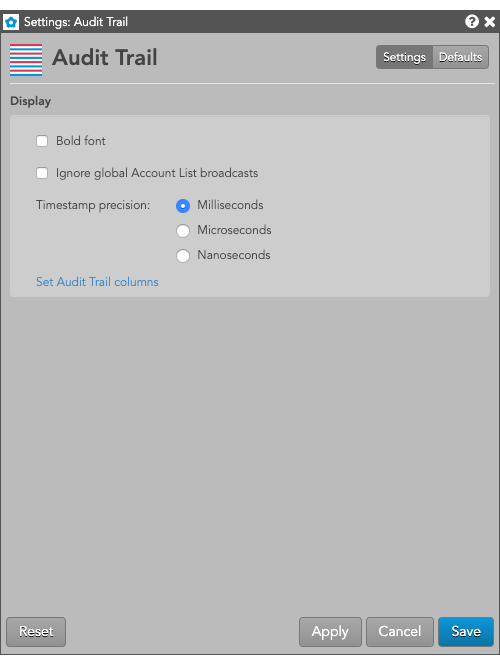

Right-click in the widget to open the context menu and select the following settings:
These settings affect only the selected Audit Trail widget. To update the default settings with these value for newly-opened Audit Trail widgets, or to apply them to existing opened widgets, click Defaults.

{% include settings/audit-trail-settings.html %} {% include filtering-columns.html %}